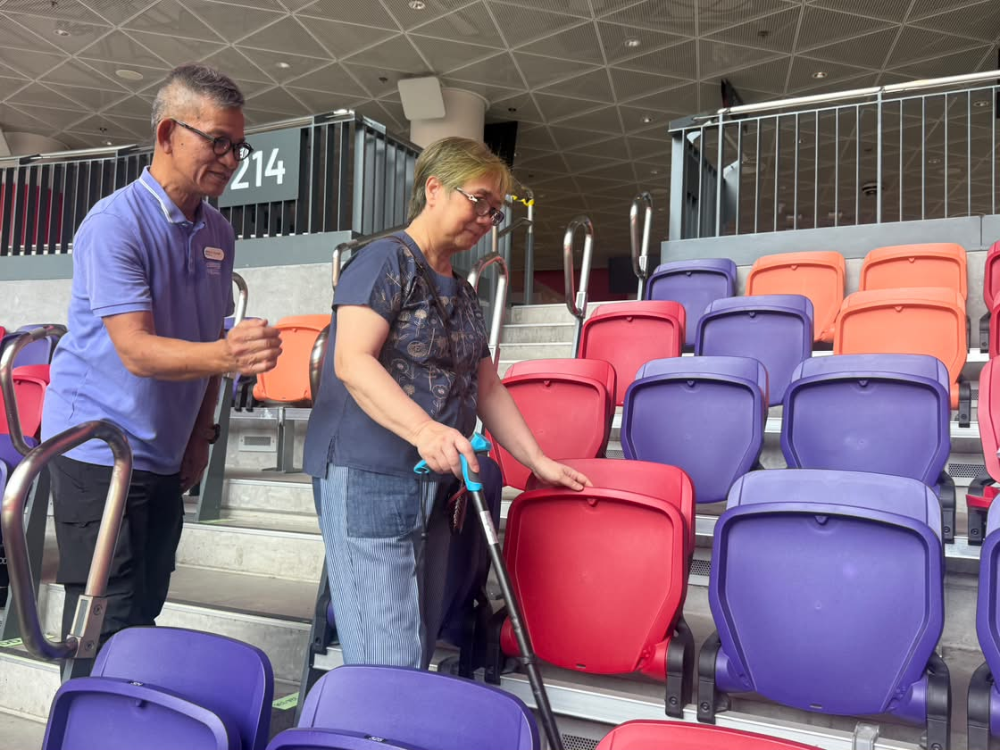

others2026-10-17 13:35 · 啟德體育園
啟德體育園奪平機會通用設計金獎 無障礙盛事體驗獲肯定
Kai Tak Sports Park Wins EOC Universal Design Gold Award for Accessible World-Class Experience
启德体育园夺平机会通用设计金奖 无障碍盛事体验获肯定
啟德體育園日前榮獲平等機會委員會頒發「通用設計嘉許計劃2026/27」金獎及特別嘉許大獎，肯定體育園喺規劃、設計及營運方面全面實踐通用設計理念，為唔同年齡、能力及需要嘅人士創造共融無障礙嘅世界級盛事體驗。體育園行政總裁金民豪表示，園區由規劃設計階段已將通用設計融入每個細節，好多設施配置更超越法定要求。
作為香港最大型嘅綜合體育及休閒娛樂新地標，啟德體育園自2025年3月開幕以嚟，已經舉辦超過170項國際及本地體育、文化娛樂盛事，包括香港國際七人欖球賽、世界級足球賽事、第十五屆全國運動會香港賽區賽事，以及多場巨星演唱會，吸引數以百萬計觀眾入場。三大場館設有輪椅座位及陪同者座位，部分位置更有充電電源方便電動輪椅使用者；亦都照顧視障人士需要，設點字地圖、觸覺引路徑、凸字座位編號，仲有感應環路系統、FM調頻接收系統等，連祈禱室都有埋。
資料來源：啟德體育園新聞稿（13/10/2026）；相片由啟德體育園提供。